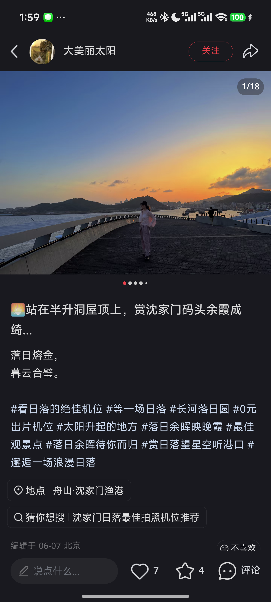
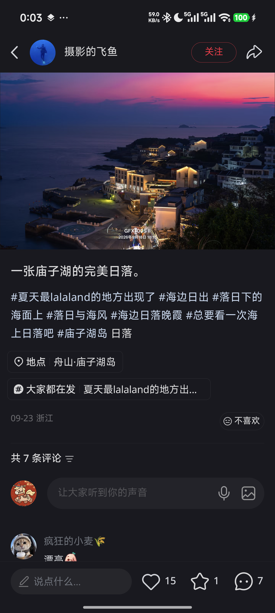
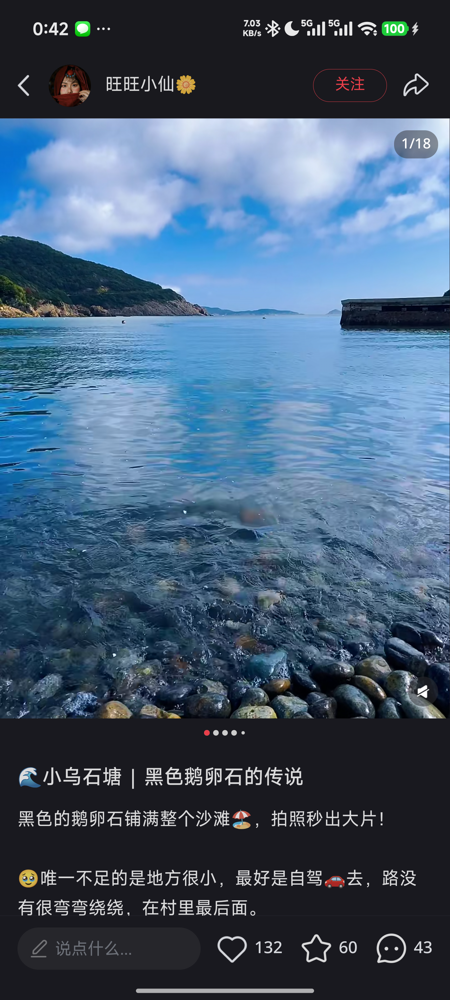

01 / 最优先待确认
小狗能顺利上船吗？
小狗 13.7 kg。实测肩高须符合船方要求；准备能全程容纳它的笼包、疫苗本，并向承运方确认 去返程携宠名额和安置区域。
去勾选准备事项 ↗庙子湖实拍 · 摄影的飞鱼 ↗
BEFORE WE GO / 出发前
船票和三晚住宿已订好。现在最关键的是小狗登船、当日海况，以及取车交付信息。
小狗 13.7 kg。实测肩高须符合船方要求；准备能全程容纳它的笼包、疫苗本，并向承运方确认 去返程携宠名额和安置区域。
去勾选准备事项 ↗此前预报 4—5 日沿海阵风较强。3 日睡前、4—5 日出门前查运营方公告和已购订单。
查看舟山天气 ↗核对实车版本、携犬规则、清洁费、交还车电量；拍好车况。上岛时车停沈家门陆上停车场。
看行车与停车提醒 ↗THE FOUR DAYS / 四天三晚
时间是出行窗口。遇到堵车、风雨或小狗疲惫，就舍弃景点，守住船班和还车时间。
SATURDAY · 10.03
今天的任务是平安到达。晚霞和海鲜都可以随路况调整。
确认 11:50 去程、海况、码头停车接驳，并备好笼包与船票二维码。
SUNDAY · 10.04
上岛是今天唯一要赶的事。抵岛后只在港边慢慢走。
MONDAY · 10.05
上午慢走，下午返航。午餐和拍照都要给登船让路。
石码头或海享莱简餐；排队长就外带。午饭结束后只安排去码头。
TUESDAY · 10.06
最后看一眼海，然后早点回家。还车时间优先。
出发前在车机设还车门店，查看预计抵达时间和电量。路上合并午餐、遛狗和充电。
ALL IN ONE PLACE / 已订与导航
金额来自已核对的订单。具体检票、入住与退订仍以各平台最新订单为准。
三晚住宿合计 ¥2,853。息耒金沙曾回复宠物友好、免费；三家对 13.7 kg 小狗的实际接待条件仍需入住前再确认。
ON THE ROAD / 车与船
GOOD FOOD, EASY DAYS / 吃饭
餐馆是候选，不是预订。先问 13.7 kg 小狗能否入座；不方便就外带。海鲜先看重量、单价和加工费。
高佳庄可看明码标价的活鲜；晚到看笑嘻嘻固定价套餐。两家携犬、营业与等位均要当日确认。
导航高佳庄 ↗烤鱼、避风塘虾可看当日菜单。若排队长、下雨或小狗累了，问海享莱能否供餐或外带。
导航 Hola Hola ↗岛上中午选石码头或民宿，12:30 前结束。晚上住朱家尖，选酒店附近川海人家或简餐。
导航晚餐 ↗PACK & CHECK / 两个人的清单
勾选只保存在这台设备的浏览器里，方便出门前反复查看。
A FEW PLACES TO REMEMBER
这些是旅行笔记作者当时拍到的景色。海色与晚霞，要等我们自己去遇见。



页面按 2026 年 10 月 1—2 日的订单与研究整理。天气、交通、携宠要求、营业和充电状态会变化，当日以运营方、门店与实时导航为准。地图按钮打开高德搜索，请核对同名地点和入口。